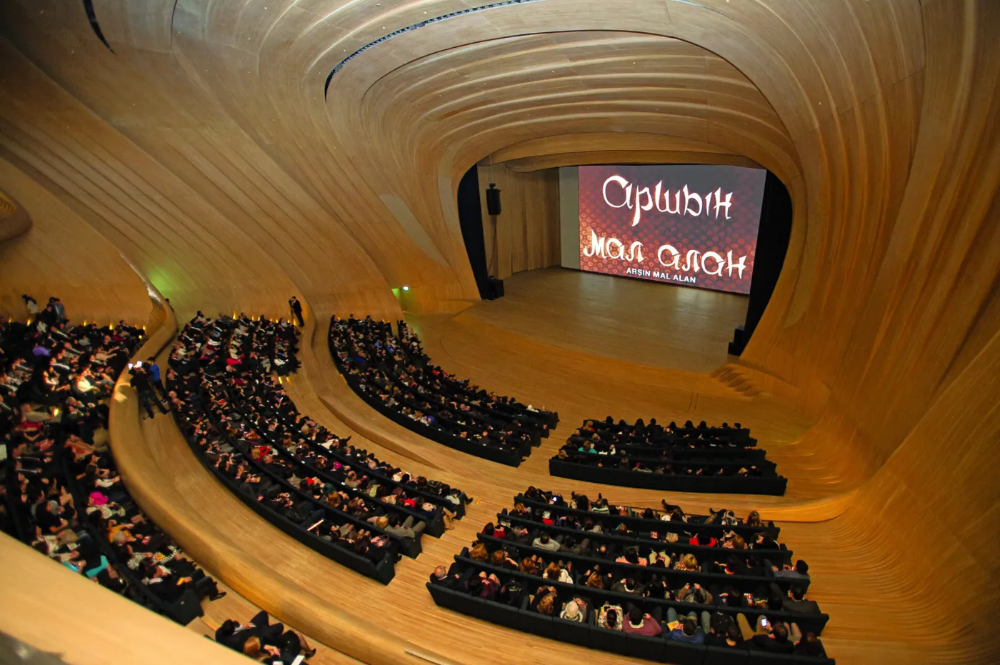
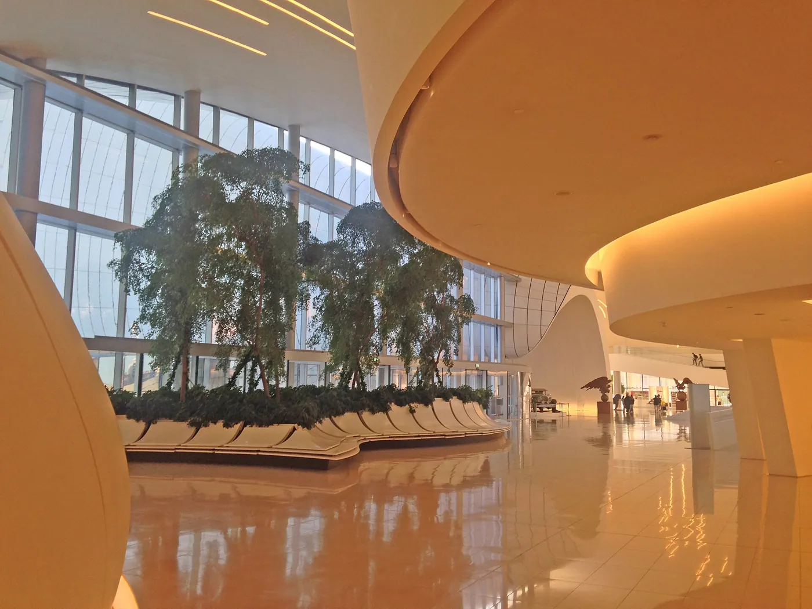
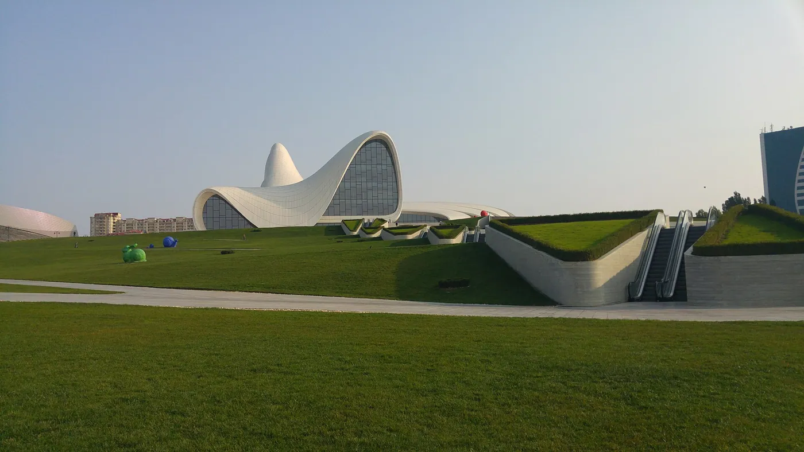
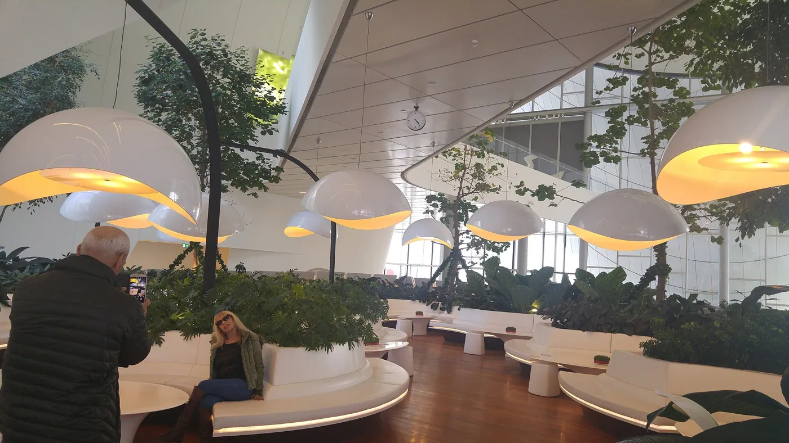

1/7 · Exterior · HEIDAR ALIYEV CENTER IN BAKU - WIDE ANGLEPhoto: Avisadehh · CC0 · source 2/7 · Exterior · HEIDAR ALIYEV CENTER AND OUTDOOR GREEN GRASSPhoto: Avisadehh · CC0 · source3/7 · Exterior · The Heydar Aliyev Center illuminated at nightPhoto: lumoplank · CC0 · source4/7 · Interior · Interior of Heydar Aliyev Cultural CenterPhoto: Mahmoodrezamo · CC BY-SA 4.0 · source
2/7 · Exterior · HEIDAR ALIYEV CENTER AND OUTDOOR GREEN GRASSPhoto: Avisadehh · CC0 · source3/7 · Exterior · The Heydar Aliyev Center illuminated at nightPhoto: lumoplank · CC0 · source4/7 · Interior · Interior of Heydar Aliyev Cultural CenterPhoto: Mahmoodrezamo · CC BY-SA 4.0 · source
5/7 · Interior · Interior of Heydar Aliyev Cultural CenterPhoto: Mahmoodrezamo · CC BY-SA 4.0 · source
6/7 · Interior · Interior of Heydar Aliyev Cultural CenterPhoto: Mahmoodrezamo · CC BY-SA 4.0 · source
7/7 · InteriorPhoto: Emin Allahverdi · CC BY-SA 4.0 · sourceCulture & sport · Parametric
Heydar Aliyev Center
Zaha Hadid · Baku, Azerbaijan · 2012
Key featuresOne continuous surface folds from plaza to roof, with no line between wall and ground.
- Architect
- Zaha Hadid
- Place
- Baku, Azerbaijan
- Year
- 2012
- Typology
- Culture & sport
- Movement
- Parametric
- Region
- Middle East
See it on the wall